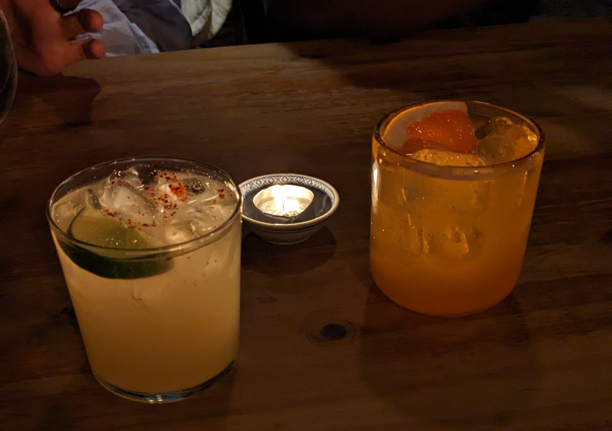

EGO

This is the Sanagogue. Digital home of shit I think is cool.
Sanagogue is the Sanagogue.
Please make yourself at home.
January 2024
This is FKA Twigs practicing/playing with a sword. I would like a sword.
She is listening to HOODBYAIR by Playboi Carti.
I came across it on twitter.
It didn't really make me think or feel much but I enjoyed watching it because I like that one album she made, I like HOODBYAIR and I like swords.
March 2024
Starting the month with a bit of experimentation with flexbox. Have to fill them with something so let's run some restaurant reviews from my February victims.
Bodega.
Bodega was fun. It's one of two tucked treasures I was introduced to in February. They have a short menu and a good ramen bowl that never stood a chance against me. Quite a few good vegetarian things going on with their little plates. I'll throw in a picture of two cocktails that were fresh and nice and all that. One was pomegranate and soju and the other was something with lemongrass but I don't remember much more than that.
YU.
My tried and tested favorite. Never diappoints. I tried a new cocktail - something about coconut. It was alright but more fruity and sweet than I had hoped. I will attach a picture below. Otherwise it was excellent, again. The only unfortunate news is that I think I have found my favorite items on the menu and I doubt I will find anything that knocks off my top picks. These are blessed problems to have.
Akiya Sushi
Let's put all cards on the table. The recomendation was on a "best sushi I've ever had in Cape Town" basis, so my expectations were sky high. The sushi was good. I'm not sure it's the best in the city though. They had a really good softshell crab roll and then we took a chance on a 'surf 'n turf' roll that was interesting but beef on sushi is, in my opinion, gross. There was also a salmon skin roll that was crispy and interesting/good enough to deserve a mention. Cool spot. I would go back.
Babbi.
Warm little bar and deli tucked away in a secluded square. They chill their Stella and heat their (diabolical) cookies. I can't speak on the rest of the food or drinks. I was too happy with my cookie, beer and company to stray from the path.